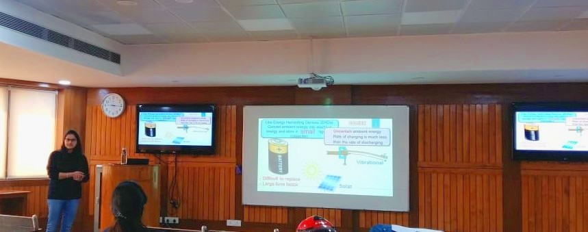
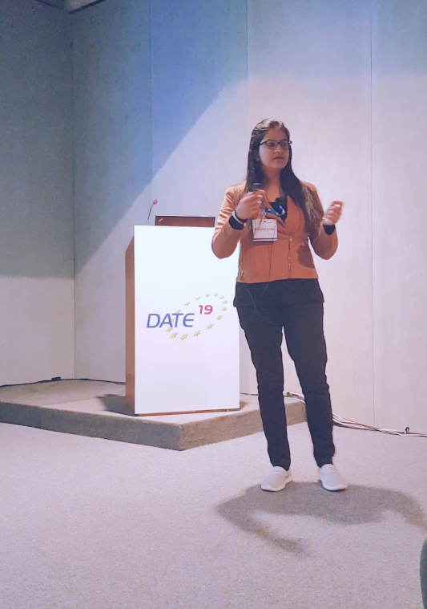
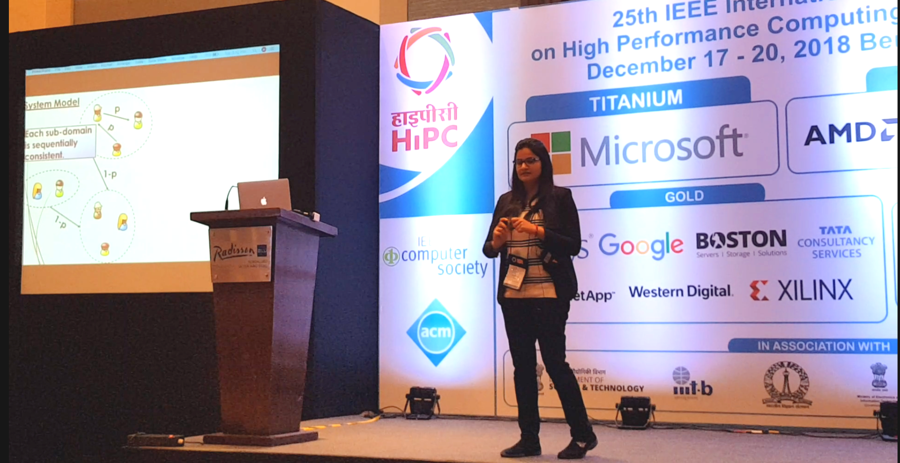

RESEARCH PROFILE
Research & Updates
My research spans cache and coherence architecture, interconnects and chiplet systems, and energy-efficient computing. Explore selected projects and a chronological record of research milestones.

Research areas & selected projects
Across my academic and industry work, I enjoy understanding system bottlenecks and developing practical architectural solutions.
OSCAR: Optimizing Shared CAches by Simplifying CoheRence [2026]
Explores simplifications to shared-cache coherence behaviour to improve performance while avoiding additional storage overhead. Evaluated using gem5 Ruby and presented at CASES, ESWEEK 2026.
CmpctArch: A Generic Low Power Architecture for Compact Data Structures in Energy Harvesting Devices [2022]
Proposes a generic hardware architecture for implementing compact data structures on energy-harvesting devices. The approach reduces memory footprint by up to 3.5× while keeping energy and execution-time overhead low.
A Survey on Checkpointing Techniques in Intermittent Systems [2021]
A theoretical and experimental comparison of checkpointing approaches for energy-harvesting systems.
EHDSktch: A Generic Low Power Architecture for Sketching in Energy Harvesting Devices [2020]
Proposes hardware IP blocks for implementing popular sketching algorithms in resource-constrained energy-harvesting devices.
FlexiCheck: An Adaptive Checkpointing Architecture for Energy Harvesting Devices [2019]
Develops a formal model and checkpointing schedule for energy-harvesting systems, using optimization to identify efficient checkpointing policies.
Scalable and Socially Consistent Systems [2018]
Explores handling overload in social-networking systems through splitting and merging objects to reduce hot spots and improve scalability.
Research timeline
Research Updates
Presented “OSCAR: Optimizing Shared CAches by Simplifying CoheRence” at CASES, ESWEEK 2026.
Presented CmpctArch at ISVLSI 2022, Cyprus (virtual).
“CmpctArch: A Generic Low Power Architecture for Compact Data Structures in Energy Harvesting Devices” accepted as a regular paper at ISVLSI 2022.
“Polar Code-based Approximate Communication System for Multimedia Web Pages” accepted as an extended abstract at IPSN 2022, Milan, Italy.
Presented “EHDSktch” at ASP-DAC, Tokyo, Japan (virtual). PDF.
“EHDSktch: A Generic Low Power Architecture for Sketching in Energy Harvesting Devices” accepted at ASP-DAC 2021.
IIT Delhi's Department of Computer Science and ANSK School of IT released a promotional video for PhD admissions.
“ApproxEHD: A Sketching based Generic Architecture for Energy Harvesting Devices” accepted as a poster at DAC 2020 (virtual).
Presented “FlexiCheck” at the PhD Symposium, IIT Delhi.

Talk: “Efficient Intermittent Systems: A Survey and Research Proposal,” IIT Delhi.
Presented “FlexiCheck” at DATE, Florence, Italy. PPT

Presented “Probabilistic Sequential Consistency in Social Networks” at HiPC, Bangalore, India. PPT

“FlexiCheck” accepted at DATE 2019.
“Probabilistic Sequential Consistency in Social Networks” accepted at HiPC 2018.